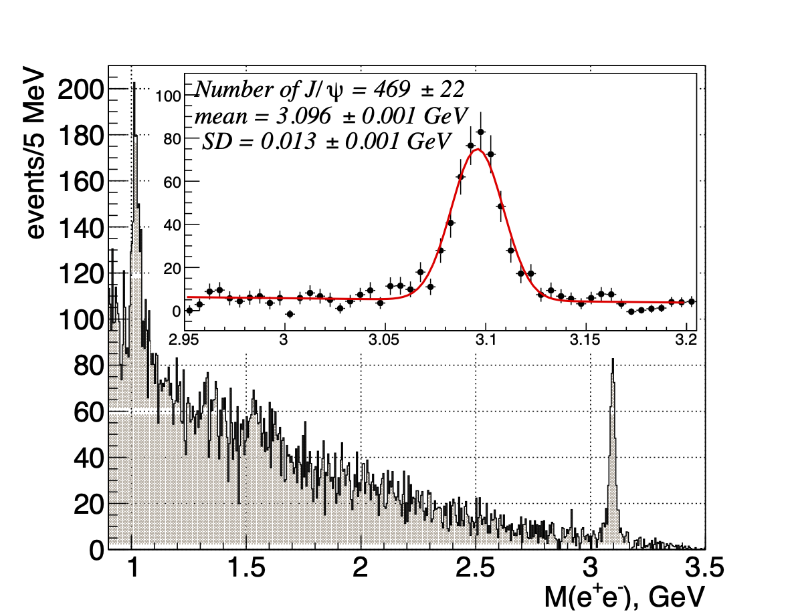
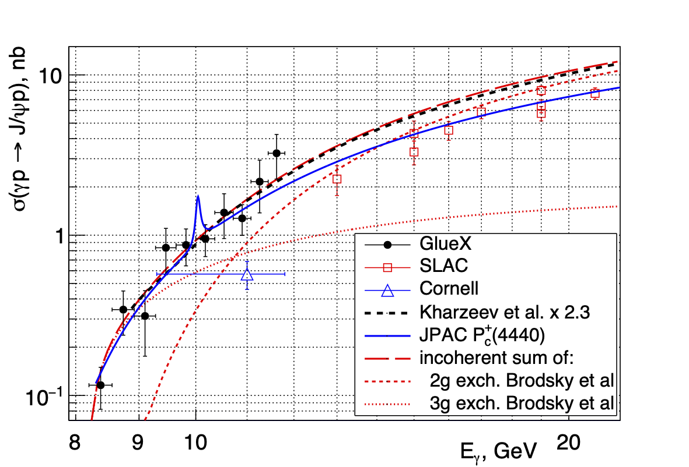

First measurement of near-threshold $J/\psi$ exclusive photoproduction off the proton
Abstract:
We report on the measurement of the $\gamma p \rightarrow J/\psi p$ cross section from $E_\gamma = 11.8$ GeV down to the threshold at $8.2$ GeV using a tagged photon beam with the GlueX experiment. We find the total cross section falls toward the threshold less steeply than expected from two-gluon exchange models. The differential cross section $d\sigma /dt$ has an exponential slope of $1.67 \pm 0.39$ GeV$^{-2}$ at $10.7$ GeV average energy. The LHCb pentaquark candidates $P_c^+$ can be produced in the $s$-channel of this reaction. We see no evidence for them and set model-dependent upper limits on their branching fractions $\mathcal{B}(P_c^+ \rightarrow J/\psi p)$ and cross sections $\sigma(\gamma p \to P_c^+)\times\mathcal{B}(P_c^+ \to J/\psi p) $.Journal: Phys. Rev. Lett. 123, 072001 (2019)
arXiv: arXiv:1905.10811
|

png pdf |
Figure 1
Electron-positron invariant mass spectrum from the data. The insert shows the $J/\psi$ region fitted with a linear polynomial plus a Gaussian (fit parameters shown). |
|

png pdf |
Figure 2
$J/\psi$ total cross section vs beam energy, compared to previous data [15, 16], theoretical predictions [11, 13], and JPAC model [6] for $\mathcal{B}(P_c^+(4440) \to J/\psi p)=1.6\%$ and $J^P=3/2^-$. All curves are fitted/scaled to the GlueX data only. For our data the quadratic sums of statistical and systematic errors are shown; the overall normalization uncertainty is $27\%$. |
{kind=link}
{kind=link}